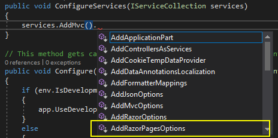

ASP.NET Core applications are designed to be modular, in that the developer only includes features and services that they need. Every .NET Core application requires a startup class where the application's features and services are configured. By default, the name of this class is Startup, but it can be named anything.
The startup class is found in the Startup.cs file that's generated as part of the default template. It has a Configure method which is required and a ConfigureServices method, which is optional. The Configure method is used for configuring the request pipeline and the ConfigureServices method is used to make services available to the application.
The Request Pipeline
When requests are made to a web application, they need to be processed in some way. A number of considerations need to be taken into account. Where should the request be directed or routed to? Should it log details of the request? Should the application simply return the content of a file? Should it compress the response? What should happen if an exception is encountered while the request is being processed? Is the person making the request actually allowed to access the resource they have requested? How should cookies or other request-related data be handled?
Each of these processing actions are performed by separate components. The term used to describe these components is Middleware. Together, they form the request pipeline.
The Configure Method
Here is the template version of the Configure method:
public void Configure(IApplicationBuilder app, IHostingEnvironment env)
{
if (env.IsDevelopment())
{
app.UseDeveloperExceptionPage();
}
else
{
app.UseExceptionHandler("/Error");
}
app.UseStaticFiles();
app.UseMvc(routes =>
{
routes.MapRoute(
name: "default",
template: "{controller=Home}/{action=Index}/{id?}");
});
}
The parameters passed to the method are IApplicationBuilder and IHostingEnvironment. No parameters are actually required, but the IApplicationBuilder is the component that configures the request pipeline by adding middleware to it. IHostingEnvironment provides information about the environment that the application is currently running in.
This version of the Configure method examines the current environment (set via an environment variable called ASPNETCORE_ENVIRONMENT) to see if it is Development. If it is, middleware is added to the request pipeline that enables detailed error messages to be rendered to the browser if the application raises exceptions when it is running. The middleware is added using an extension method (in this case UseDeveloperExceptionPage()) on IApplicationBuilder, which is the recommended way to construct the request pipeline. If the enviroment is not Development (e.g is it Production), a middleware component is added that logs details about failed requests and redirects to a page named Error. This is the recommended behaviour for a live site, where the Error page displays a more user-friendly message rather than a stack trace.
Middleware is then added that enables the serving of static files (images, scripts, style sheets, PDF files etc), and then the MVC framework is added to the application. This is essential because Razor Pages is part of MVC. The default template sets up a default route for MVC requests, which can be dispensed with if you don't plan on building a Razor Pages/MVC/Web API hybrid application. So if you prefer, you can alter the UseMvc method as follows:
app.UseMvc();
The ConfigureServices Method
ASP.NET Core makes extensive use of dependency injection (DI) - a technique that facilitates loose coupling of code. Components, or "services" are represented as abstractions, typically interfaces, as you have already seen in the Configure method with IApplicationBuilder. In DI, each abstraction is paired with an implementation (or "concrete") type. This pairing is stored in a dictionary-like structure so that when an abstraction is passed as a parameter to a method (particularly a constructor), the implementation type is instantiated and passed in by the DI container. The primary purpose of the ConfigureServices method is as a place to register implementation types for services that are needed by the application. It is also used to configure any options related to those services.
If it has been added to the Startup class, the ConfigureServices method is called before the Configure method. That makes sense, because the Configure method may attempt to reference services which need to be registered beforehand so that they can be resolved. This is the case with the default template where MVC is registered:
public void ConfigureServices(IServiceCollection services)
{
services.AddMvc();
}
The AddMvc method is a wrapper for adding a substantial number of components to the service collection, including routing, model binding, caching, view engines and other components that MVC (and therefore Razor Pages) requires. It also provides a place where options relating to the services can be configured. For example, The AddMvc method returns an IMvcBuilder, which offers a wide range of configuration options:

If you want to configure the root folder for Razor Pages to be something other than the default Pages, this is where you would do that:
public void ConfigureServices(IServiceCollection services)
{
services.AddMvc().AddRazorPagesOptions(options =>
{
options.RootDirectory = "/Content";
});
}
Compatibility Version
A new setting, Compatibility Version was introduced in ASP.NET Core 2.1. This allows you to opt into or out of new features released as part of future versions which might break existing behaviour. For example, Areas was introduced in 2.1. This may have an adverse effect on the routing in some Razor Pages applications built using the default configuration found in version 2.0, which are subsequently upgraded to version 2.1 or later. The team behind ASP.NET Core decided that areas (and other features) should be enabled by default going forward.
The SetCompatibilityVersion method enables you to determine the version of the framework that your application should be compatible with, in respect of these default behaviours. It takes an enumeration specifying the framework version. All new applications built using the standard template that target version 2.1 have the compatibility version set to CompatibilityVersion.Version_2_1.
services.AddMvc().SetCompatibilityVersion(CompatibilityVersion.Version_2_1);
Even with this setting, you can selectively disable default behaviours:
// disable areas, but keep the other new default behaviours
services.AddMvc().AddRazorPagesOptions(options => {
options.AllowAreas = false;
}).SetCompatibilityVersion(CompatibilityVersion.Version_2_1);
Alternatively, you can keep the version 2.0 defaults - either by specifying CompatibilityVersion.Version_2_0 or omitting the method - and then selectively enable new features:
// don't introduce the new behaviours, but allow me to use areas
services.AddMvc().AddRazorPagesOptions(options => {
options.AllowAreas = true;
}).SetCompatibilityVersion(CompatibilityVersion.Version_2_0);